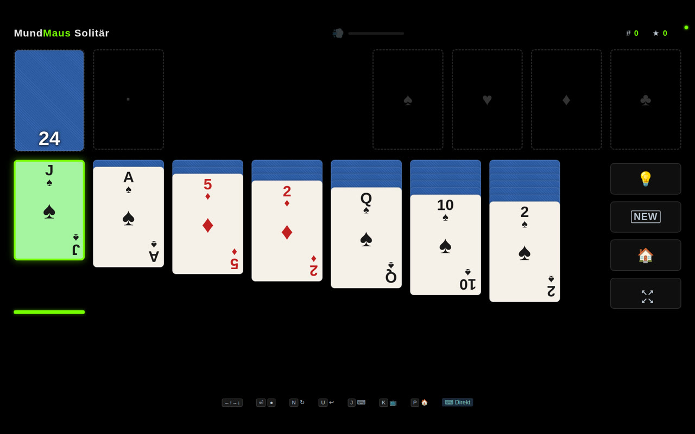
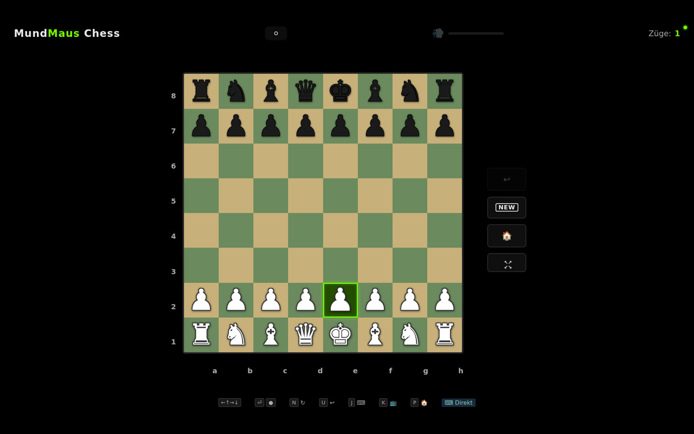
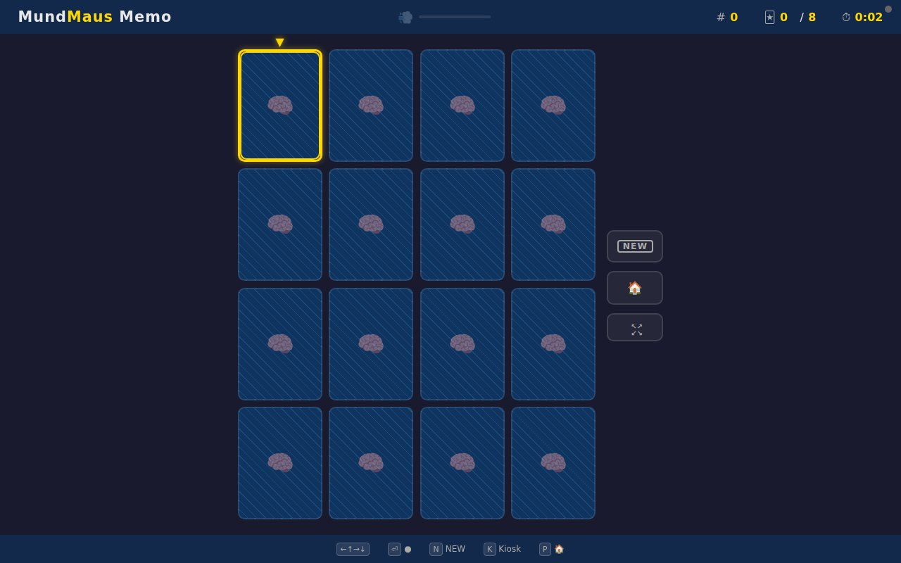
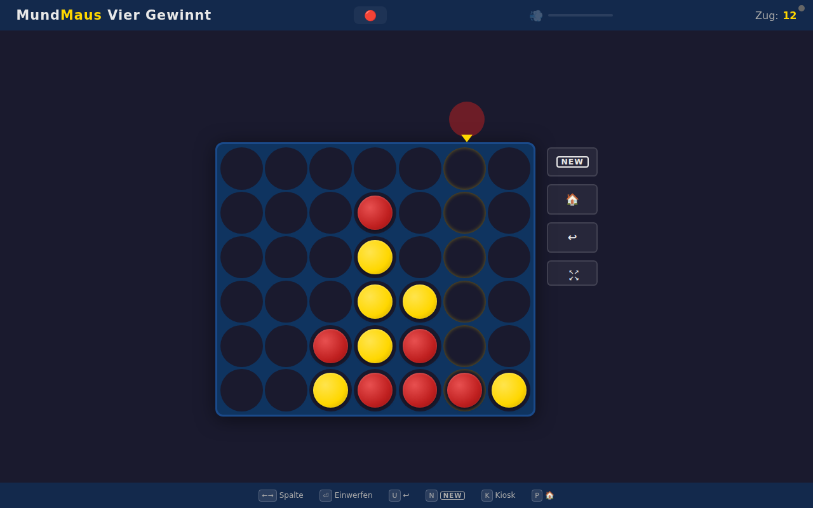
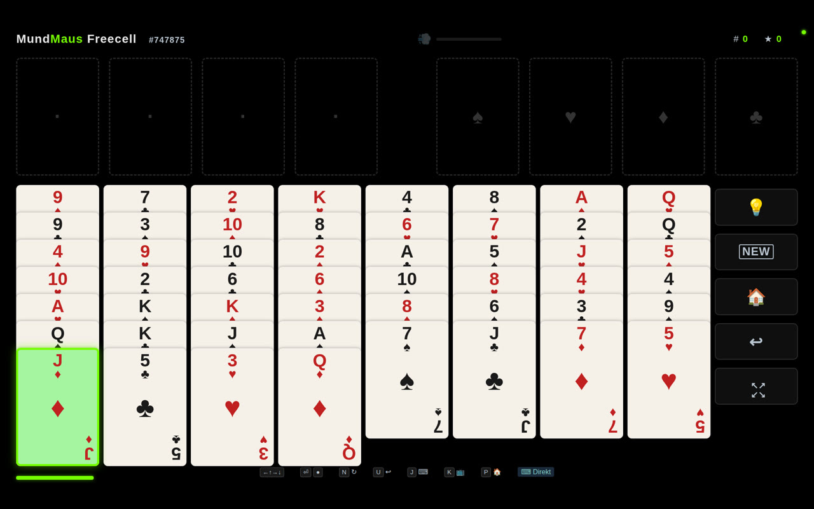
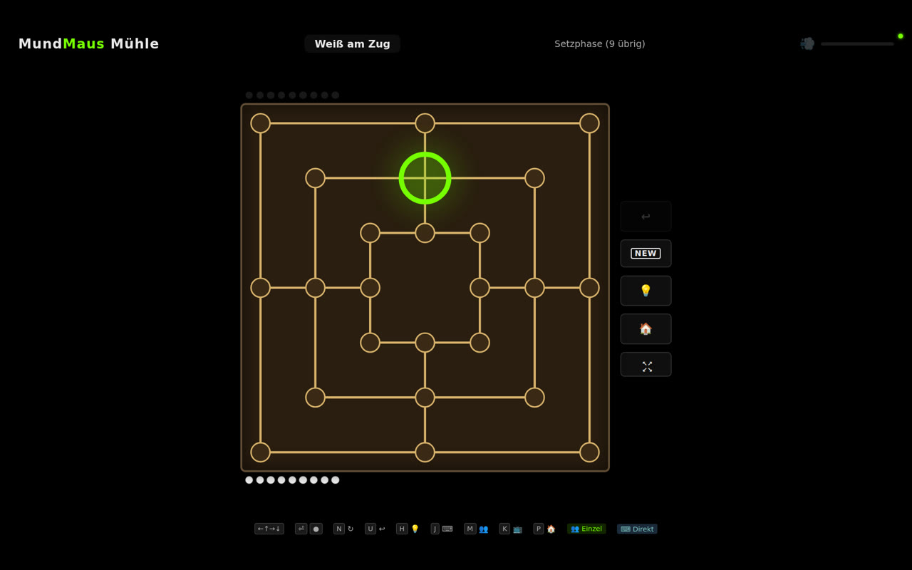
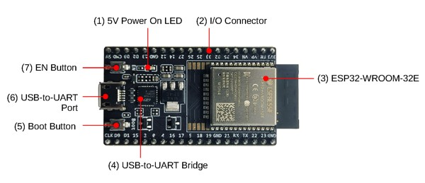
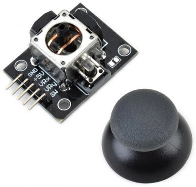
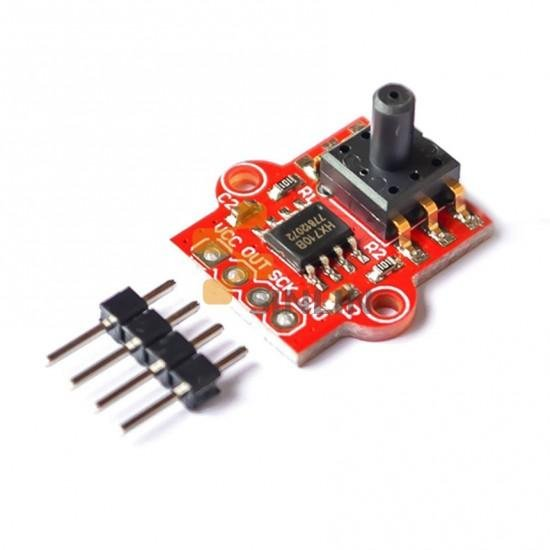

Open-Source Assistive Technology
MundMaus
Eine mundgesteuerte Spielkonsole für Menschen mit Tetraplegie. Joystick, Drucksensor und Browser-Spiele — alles was es braucht ist ein Pusten.
Open-Source Assistive Technology
Eine mundgesteuerte Spielkonsole für Menschen mit Tetraplegie. Joystick, Drucksensor und Browser-Spiele — alles was es braucht ist ein Pusten.
Ein kompaktes Gerät, das Mundbewegungen in Computereingaben übersetzt — entwickelt für Menschen, die nur ihre Gesichtsmuskulatur nutzen können.
Ein Joystick mit Mundstück. Lippen und Zunge steuern die Navigation — intuitiv und präzise.
Ein Drucksensor erkennt Pusten über einen Silikonschlauch. Leichtes Pusten genügt als Mausklick.
Solitaire, Schach, Memory, Vier Gewinnt, Freecell, Mühle — optimiert für Mundsteuerung mit grossen, gut sichtbaren Elementen.
Statt unsichtbarer Cooldowns zeigt ein sich aufbauender Rahmen um das Zielfeld, wann der Cursor dorthin springt. Der Patient sieht jederzeit, wohin die nächste Bewegung geht — und kann vorher loslassen.
Das Gerät verbindet sich per WLAN. Spiele laufen im Browser auf Tablet, Laptop oder Fernseher.
Einstellungen per Slider im Browser anpassen — Empfindlichkeit, Puste-Stärke, Geschwindigkeit. Keine technischen Kenntnisse nötig.
Neue Spiele und Updates werden automatisch über WiFi heruntergeladen. Automatischer Rollback bei Fehlern.
Drei einfache Schritte — mehr braucht es nicht.
Den Joystick mit Lippen und Zunge in die gewünschte Richtung lenken. Hoch, runter, links, rechts.
Leicht ins Mundstück pusten. Der Drucksensor erkennt den Luftstoss und löst einen Klick aus.
Die Spiele laufen im Browser. Einfach die MundMaus-Adresse aufrufen und losspielen.
Klassiker, optimiert für Mundsteuerung. Grosse Elemente, klare Farben, barrierefreies Design.

Klondike Solitaire mit Undo, Auto-Solve und Punktesystem. Der Klassiker für zwischendurch.

Gegen den Computer in vier Schwierigkeitsstufen — von Anfänger bis Fortgeschritten. Mit Zugvorschlägen und Rückgängig-Button.

Paare finden in vier Feldgrössen (3×4 bis 6×6). Dreifach kodiert mit Symbolen, Farben und Text — auch für Farbenblinde.

Connect Four gegen die KI in drei Schwierigkeitsstufen. Einwerfen per Pusten — der Klassiker für zwei Denker.

Freecell Solitaire mit vier freien Zellen, Supermove und Auto-Complete. Alle Karten von Anfang an sichtbar.

Nine Men's Morris gegen die KI in drei Schwierigkeitsstufen. Setzen, ziehen, Mühlen bilden — und den Gegner Stein für Stein verdrängen. Mit Multiplayer-Modus.
Einfache, günstige Bauteile. Fast alles nur Steckverbindungen — nur der Drucksensor muss gelötet werden.
Mikrocontroller mit WLAN. Hostet Webserver und Spiele direkt auf dem Chip.

Analoger 2-Achsen-Joystick mit Taster. Wird mit Mundstück bedient.

Erkennt Pusten über Silikonschlauch. Empfindlich genug für leichtes Blasen. Einziges Bauteil das gelötet werden muss.

PETG-Gehäuse, entworfen in CadQuery. Alle STL-Dateien im Repository.